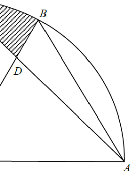

In the figure, \(O\) is the centre of the sector \(OABC\). It is given that \(\Delta OAB\) is an equilateral triangle. \(AC\) and \(OB\) intersect at the point \(D\). If \(OA = 12\) cm and \(\angle AOC = 90^\circ\), find the area of the shaded region \(BCD\) correct to the nearest \(\text{cm}^2\).

Because \(\Delta OAB\) is equilateral, \(\angle AOB = 60^\circ\). Then the sector angle is split:
\[ \angle BOC = \angle AOC - \angle AOB = 90^\circ - 60^\circ = 30^\circ. \]In an equilateral triangle all interior angles equal \(60^\circ\), so
\[ \angle AOB = 60^\circ. \]Since \(OA\) and \(OC\) are radii and \(\angle AOC = 90^\circ\),
\[ \angle BOC = 90^\circ - 60^\circ = 30^\circ. \]Use the "two sides and included angle" area formula on \(\Delta AOC\), then split it with the area ratio at \(D\).
Area of \(\Delta AOC\) using two sides and the included angle:
\[ [\Delta AOC] = \tfrac12 \cdot OA \cdot OC \cdot \sin \angle AOC = \tfrac12 (12)(12)\sin 90^\circ = 72\ \text{cm}^2. \]Triangles \(\Delta COD\) and \(\Delta AOD\) share the same altitude from \(O\) to the line \(AC\) (in fact \(OD\) is on both). Using the included angle at \(O\) in each:
\[ \frac{[\Delta COD]}{[\Delta AOD]} = \frac{\tfrac12 \cdot OC \cdot OD \cdot \sin 30^\circ}{\tfrac12 \cdot OA \cdot OD \cdot \sin 60^\circ} = \frac{\sin 30^\circ}{\sin 60^\circ} = \frac{1}{\sqrt{3}}. \]Therefore \([\Delta COD] = 72 \times \dfrac{1}{1+\sqrt3}\).
The sector between \(OB\) and \(OC\) has angle \(30^\circ\); subtract \(\Delta COD\) to get the shaded region.
Area of sector \(OBC\) with angle \(30^\circ\):
\[ [\text{sector }OBC] = \pi r^2 \times \frac{30^\circ}{360^\circ} = \pi (12)^2 \times \frac{1}{12} = 12\pi\ \text{cm}^2. \]The shaded region \(BCD\) = sector \(BOC\) minus triangle \(\Delta COD\):
\[ [BCD] = 12\pi - \frac{72}{1+\sqrt3} = 12\pi - 72(\sqrt3 - 1)\cdot\frac{1}{(\sqrt3+1)(\sqrt3-1)} \approx 37.699 - 26.354 = 11.345\ \text{cm}^2. \]